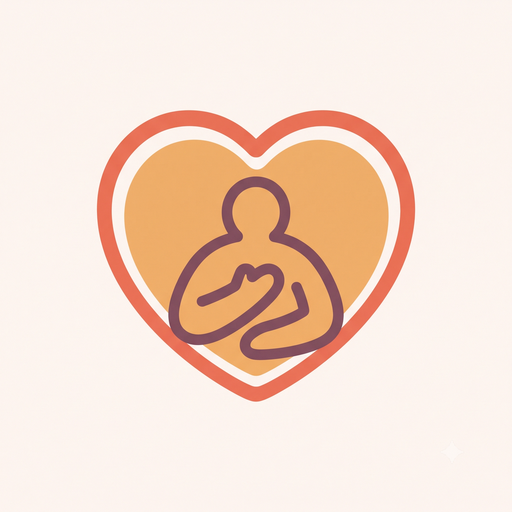
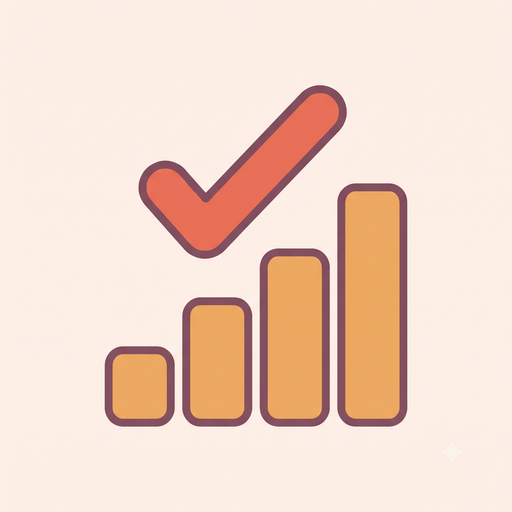
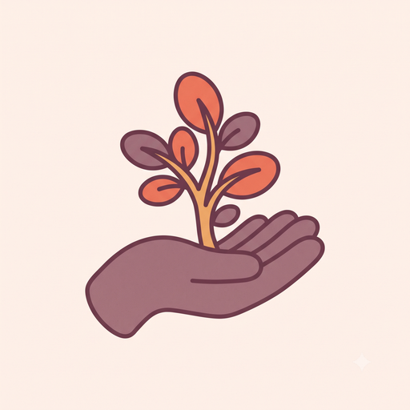
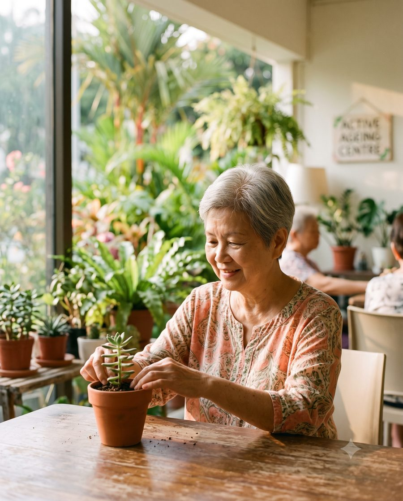

No single source of truth
How to run a good, safe session lives in a few experienced heads and scattered documents. New staff can't find it.
An AI platform for social-care organisations
Cura plans person-fit activities in minutes, keeps care consistent across every shift, and proves impact to funders — grounded in your organisation's own knowledge, with a human always in charge.
The problem
Whether you serve seniors, people with disabilities, mental-health recovery, youth or families, the operational pain is the same. The World Health Organization projects a global shortfall of about 11 million care workers by 2030, and social-care turnover runs near 30% a year. You cannot hire your way out of this.
How to run a good, safe session lives in a few experienced heads and scattered documents. New staff can't find it.
Staff spend a quarter to the majority of the day planning and doing paperwork, instead of being with people.
When an experienced person leaves, their know-how leaves too — and the next person starts from scratch.
Quality depends on who's on shift, and it's hard to show funders the outcomes they now demand.
What Cura is
It's tempting to picture a clever chatbot. Picture instead a system with four parts that run together — wrapped in a safety layer where a person approves before anything is used, and data is handled to Singapore's PDPA standard.
The organisation's brain
One place holding all your knowledge — activity guides, procedures, safety protocols, past plans — structured so it can be searched and used.
The part that does the work
Reads the Repository and each client's needs, coordinates several tools, and produces something finished — a plan, a worksheet, a report.
The friendly interface
The chat-style surface your staff talk to. This is just one window into the platform — not the whole product.
The management & proof view
Where managers see what's happening across the organisation — and where the evidence for funders is produced.
"But anyone can build a chatbot now."
A chatbot answers a question. Cura runs the whole job — it pulls from your Repository, tailors to each client, produces the actual worksheet and schedule, runs the safety check, and files the record on the Dashboard. The value is the platform and your own information, not the AI model anyone can rent.
What it does
One source of truth
Staff ask in plain language and get your centre's own approved answer in seconds.
Person-fit programmes in minutes
Pick a client or group and a goal; Cura drafts a session matched to each person's ability.
Ready-to-use materials
Turns a plan into printable worksheets, visual schedules and a volunteer brief.

Client intelligence
Builds a simple profile of each client's preferences and triggers, so care stays consistent.

An outcomes dashboard
Logs sessions, engagement and staff-time saved into reports for management and funders.

Builds your AI capability
Coaches staff and helps identify "AI champions", so confidence grows in-house.
Cura in action
Siti needs a 45-minute group session for eight adults with intellectual disabilities: two use wheelchairs, one is non-verbal and dislikes loud noise, one is working on hand strength.
Grounded in this centre and these people. Safe, human-checked, and recorded for proof. Exactly what a generic tool cannot do.
Who it's for
The daily champion
Her Sunday planning drops from 3–4 hours to about 30 minutes, with fresher, better-fitting activities and more time on the floor with people.
The buyer
Sees sessions, attendance and staff-time saved across centres, and exports a funder-ready impact report in minutes — not days of chasing notes.

The beneficiary
When her regular caregiver is away, any staff member knows she loves music before lunch and dislikes crowds — so care stays personal and consistent.
Why only Cura
Once your materials, plans and client context are in the system, leaving means losing all of it — a real switching cost generic AI can never create.
Low digital literacy, PDPA, grant funding and human-in-the-loop safety — designed in from day one, not bolted on.
Every output is grounded in your own approved materials and safety rules, and a person approves before anything is used with a vulnerable person.
Every organisation's knowledge and results make the shared benchmarks better — something a fresh chatbot starting from zero can't match.
Get started
Land narrow with the Plan and Know pillars, prove the hours saved, then expand into the full platform. In Singapore, programmes like NCSS Tech-and-GO! and SG Enable's Enabling Lives Initiative can cover up to ~80% of the cost — so your out-of-pocket starts near zero.